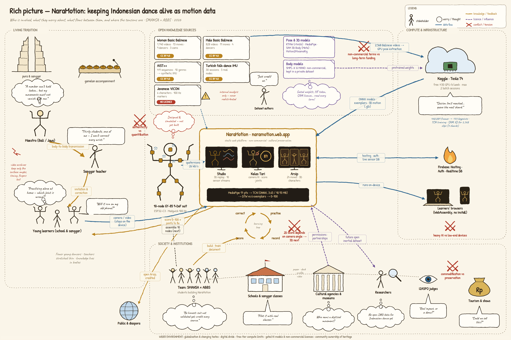

Who is involved in keeping Indonesian dance alive as motion data, what each group worries about, what flows between them, and where the tensions are. Click any node for details, click a branch to fold it, drag to pan, scroll or pinch to zoom.

Tap the picture to switch between fit-to-width and full size (4200 × 2800 px).